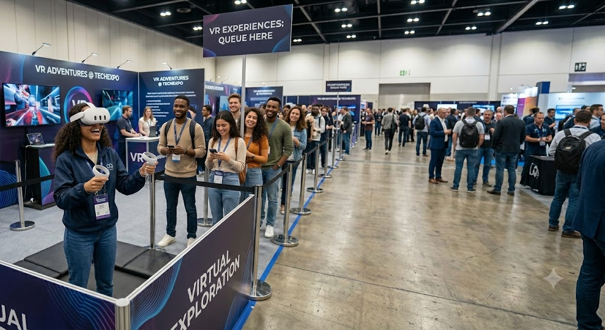

1 - Palestra: O Futuro da Inteligência Artificial
Palestrante: Dr. Carlos Silva
Hora: 14:00h
A TechFuture Expo nasceu em 2018 com o propósito de conectar mentes inquietas e grandes ideias.
O que começou como um pequeno encontro universitário se transformou na maior feira de inovação do país, reunindo anualmente milhares de apaixonados por tecnologia e pelo amanhã.
Palestrante: Dr. Carlos Silva
Hora: 14:00h
Palestrante: Mariana Costa
Hora: 15:30h
Palestrante: André Santos
Hora: 10:00h
Palestrante: Patrícia Lima
Hora: 11:30h
Palestrante: Roberto Nunes
Hora: 14:00h
Palestrante: Dra. Alice Rocha
Hora: 09:00h
Palestrante: Fernando Souza
Hora: 11:00h
Palestrante: Juliana Mendes
Hora: 15:00h
Palestrante: Dr. Carlos Silva
Hora: 10:00h
Palestrante: Mariana Costa
Hora: 14:00h
| Empresa | Cidade | Segmento | Estande |
|---|---|---|---|
| Alfa Tech | São Paulo | Software | A-12 |
| Beta Robotics | Curitiba | Robótica | B-05 |
| Green Energy | Belo Horizonte | Sustentabilidade | C-22 |
| Total de Expositores Mapeados nesta prévia: 3 empresas | |||
A organização do evento anunciou que as entradas para o primeiro dia de feira acabaram em menos de duas horas após a abertura oficial das vendas no site.
"A procura superou todas as nossas expectativas, mostrando que o público está sedento por inovação e tecnologia neste ano."
Declarou Marcos Vinícius, diretor de comunicação da feira, em entrevista ao Portal de Notícias TechMundo.
Uma das grandes novidades desta edição será o espaço dedicado a batalhas e demonstrações de robôs autônomos, trazendo protótipos de vários países.
"Teremos tecnologias de ponta que nunca pisaram no Brasil antes. Será um show de engenharia e inteligência artificial."
Afirmou a coordenadora de conteúdo do evento, conforme publicado na Revista Inovação Digital.
Alinhado com as metas de redução de carbono, o evento deste ano contará com uma praça de alimentação totalmente baseada em economia circular e embalagens biodegradáveis.
"Nosso objetivo é fazer com que a tecnologia ande de mãos dadas com a preservação do meio ambiente durante os quatro dias de feira."
Diz a nota oficial veiculada no jornal impresso Gazeta do Futuro.


Os portões abrem diariamente às 09:00h e fecham às 20:00h.
Sim! Todos os participantes que assistirem às palestras receberão o certificado digital.
Sim, o Expocenter conta com estacionamento terceirizado pago por diária.
*(Adicione mais 7 perguntas usando o modelo de details acima)*